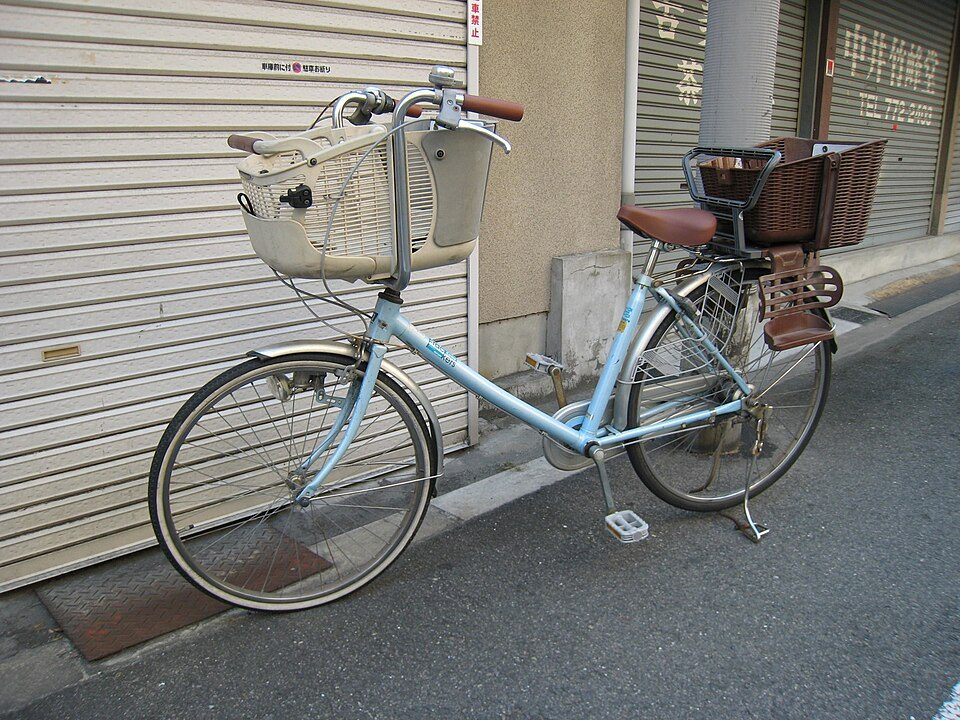

30代のうちにやっておきたいこと：40歳の前に知っておきたい制度と、家族・住まい・健康の備え（2026年版）
要点まとめ
30代は、結婚・出産・住まい・仕事の責任が重なりやすく、40歳を境に介護保険や検診などの制度が切り替わる時期です。この記事では、30代のうちにやっておきたいことを、40歳の前後で条件が変わる制度と、国の統計で分かる30代の実態から選びました。根拠は厚生労働省・国土交通省・こども家庭庁などの公的資料です。数字は調査日時点のもので、特定の金融商品・医療・住宅をすすめるものではありません。20代については20代のうちにやっておきたいことにまとめています。
30代から40歳までの年齢の節目
40歳の前後で、多くの制度が切り替わる
35歳と40歳が大きな節目。39歳以下が条件の支援もある
| 年齢 | 始まること・変わること |
|---|---|
| 30歳 | 市町村の歯周病検診の対象。HPV検査による子宮頸がん検診（取り入れた市町村）の対象[10][5] |
| 35歳 | 会社の健診で血液検査などを省略できない。ねんきん定期便が全期間の記録になる[1][2] |
| おおむね35歳未満 | わかものハローワークの対象はここまで[11] |
| 39歳以下 | 結婚新生活の補助（夫婦とも）、省エネ住宅の新築補助の若者夫婦世帯（夫婦のどちらか）[12][13] |
| 40歳未満 | 住宅ローン減税の若者夫婦世帯（夫婦のどちらか）[9] |
| 40歳 | 介護保険料を払い始める。特定健診、乳がん・肺がん・大腸がん検診の対象。不妊治療の回数の上限が減る[3][4][5][6] |
| 43歳未満 | 不妊治療に保険が使える（治療開始時の女性の年齢）[6] |
| 45歳未満 | 教育訓練支援給付金の対象（受講開始時）[14] |
お金：年金・iDeCo・保険の前提
35歳のねんきん定期便で、記録を全部確かめる
35歳・45歳・59歳は、全期間の記録が封書で届く
ねんきん定期便は毎年届きますが、ふだんはハガキで、直近の記録だけです。35歳・45歳・59歳の節目には、加入記録の全期間を知らせる封書が届きます[2]。20代の未納や学生納付特例の期間がないか、この機会に確かめられます（筆者の見解）。
iDeCoは2026年12月、NISAは2027年1月に変わる
iDeCoは会社員の上限が月6.2万円に。70歳まで出せる
iDeCo（個人型確定拠出年金）は、2026年12月から掛金の上限が上がり、条件を満たせば70歳になるまで掛金を出せるようになります[16][17]。NISAは2027年1月から、0〜17歳の子どももつみたて投資枠を使えるようになります[18]。ここでは制度の変化だけを紹介し、利用をすすめるものではありません。
保険を見直す前に、遺族年金の見直しを知っておく
2028年4月から、子のない配偶者は原則5年の有期給付に
会社員などが亡くなったときに配偶者が受け取る遺族厚生年金は、2028年4月から見直されます。18歳年度末までの子がいない60歳未満の配偶者は、男女とも原則5年間の有期給付になります[21]。生命保険でいくら備えるかを考えるときの前提になる公的な保障なので、時期を知っておくとよいでしょう（筆者の見解）。
医療費の上限は、2026年8月から年単位でも決まる
医療費100万円でも、自己負担は約9.3万円（年収による）
高額療養費制度は、医療費の自己負担に上限を設ける制度です。2026年8月からは、月の上限に加えて「年間上限」ができました[22]。たとえば70歳未満で年収約370万〜約510万円の人は、医療費100万円の治療を受けても、自己負担は約9.3万円までです[22]。
くわしく
- 直近12か月に3か月以上上限に達すると、4か月目から上限がさらに下がる「多数回該当」がある[22]
30代の金融資産は、単身で中央値100万円
二人以上世帯の30代は、中央値311万円（2025年）
金融経済教育推進機構（J-FLEC）の2025年の調査では、30代の金融資産の中央値（真ん中の世帯の額）は、単身世帯で100万円、二人以上世帯で311万円でした。金融資産を持たない世帯は、単身で32.3%、二人以上で17.6%です[23][24]。年代別のグラフは20代の記事にあります。
健康：35歳と40歳で変わる健診
35歳の健診は、40歳以上と同じ全項目
40歳未満で血液検査などを省略できないのは35歳だけ
会社の健診では、40歳未満の人は医師の判断で血液検査・心電図・腹囲の検査を省略できますが、35歳は省略できません[1]。40〜74歳になると、医療保険者が行う特定健診（メタボリックシンドロームに着目した健診）の対象になります[4]。
30歳からHPV検査、40歳から乳がん・大腸がん・肺がん
乳がん・大腸がん・肺がんの検診は40歳から
市町村の子宮頸がん検診は20歳からですが、30歳以上は、HPV検査で調べる方法（原則5年に1回）を取り入れた市町村もあります[5]。40歳からは、乳がん（2年に1回）、肺がん・大腸がん（年1回）の検診が始まります[5]。
30歳の歯周病検診と、運動の習慣
歯周ポケット4mm以上の人は、30〜34歳で33.3%
市町村の歯周病検診は、2024年度から30歳も対象になりました[10]。国の調査では、歯周ポケットが4mm以上ある人は、30〜34歳で33.3%、35〜39歳で33.7%でした[26]。運動の習慣がある人の割合は、男女とも30〜40歳代で低くなっています[27]。
くわしく
- 国のガイドの目安は、1日60分（約8,000歩）以上の身体活動と、週2〜3日の筋トレ[28]
不妊治療の保険適用は、女性43歳未満まで
治療開始時に40歳以上だと、回数の上限は3回に減る
体外受精などの不妊治療は、2022年4月から保険が使えます。治療を始めるときに女性が43歳未満であることが条件で、回数は40歳未満なら子1人につき通算6回、40歳以上43歳未満なら3回までです[6]。日本産科婦人科学会の集計では、治療1回あたり出産に至った割合は、30歳の23.5%から40歳では10.9%に下がります[29]。
仕事と学び：賃金、転職、学び直し
賃金は30代で大きく伸び、50代後半がピーク
35〜39歳の平均は月34.1万円（2025年、所定内給与）
見方: 賃金構造基本統計調査の「賃金」は、2025年6月分の所定内給与（残業代などを除いた毎月の給与）の平均です[34]。20〜24歳を100とすると35〜39歳は140.3で、30代で大きく伸びます[33]。男性は55〜59歳の44.6万円がピークで、女性は45〜49歳と55〜59歳の30.6万円が最も高く、伸びは緩やかです[33]。
30代後半から、転職する人は減る
転職入職率は30〜34歳12.2%、35〜39歳8.5%
1年間に転職して入った人の割合は、30代前半の12.2%から、30代後半には8.5%に下がります[36]。転職で賃金が増えた人は、30〜34歳で48.6%、35〜39歳で43.5%でした[37]。わかものハローワークの対象は、おおむね35歳未満です[11]。
くわしく
- 転職で賃金が減った人は、30〜34歳で29.0%、35〜39歳で23.9%[37]
休んで学ぶなら、教育訓練休暇給付金
雇用保険に5年以上入っていれば、無給の休暇中も給付
2025年10月に始まった制度です[38]。会社の制度に基づいて30日以上続けて無給の休暇を取り、大学などで学ぶ雇用保険の加入者に、失業給付（基本手当）に相当する額が出ます[39][40]。
仕事を辞めて学ぶなら、45歳未満が条件の給付
教育訓練支援給付金は、受講開始時に45歳未満が条件
仕事を辞めて、専門実践教育訓練（通信制・夜間制を除く）を受ける人には、訓練期間中に基本手当の日額の60%が出ます[14]。受講開始が2027年3月31日までの人を対象にした暫定措置で、その後の扱いは国の審議会で検討されています[38]。給付の割合や講座の探し方は、教育訓練給付の記事にまとめています。
家族：出産・育休・児童手当

出産のお金は、一時金50万円と妊婦への給付
出産育児一時金は、子1人につき原則50万円
健康保険などに入っている人が出産すると、出産育児一時金として子1人につき原則50万円が出ます[41]。妊娠が分かった後には、市区町村の「妊婦のための支援給付」として5万円、出産予定日の8週間前からは子の人数×5万円が出ます[42]。
育休は、夫婦とも取ると給付が手取り10割相当に
男性の育休取得率は50.9%（2025年度の調査）
雇用保険の育児休業給付は、休業前の賃金の67%（181日目からは50%）です。2025年4月からは、夫婦それぞれが14日以上育休を取ると、最大28日間13%が上乗せされ、合わせて80%、手取りで10割相当になります[8]。2025年度の調査では、男性の育休取得率は50.9%でした[7]。
児童手当は、生まれたらすぐ申請する
3歳未満は月1万5,000円。所得による制限はない
児童手当は、高校生年代までの子を育てる人に、所得によらず支給されます[47]。原則として申請した月の翌月分から支給されるので、子が生まれたら早めに市区町村に申請します[48]。
住まい：減税と補助の年齢の条件
初めて家を買う人は、30代がいちばん多い
初めての分譲戸建の購入は、平均36.1歳
国土交通省の調査では、初めて住宅を買った世帯の世帯主の平均年齢は、注文住宅39.4歳、分譲戸建36.1歳、分譲マンション39.7歳でした。中古の戸建住宅を除き、30代が最も多くなっています[49]。家を買うときの全体の考え方は、家を買うときに考えることにまとめています。
くわしく
- 注文住宅と中古住宅は全国、分譲住宅は三大都市圏が調査の対象[49]
住宅ローン減税は、40歳未満の夫婦に上乗せ
夫婦のどちらかが40歳未満なら、借入限度額が増える
住宅ローン減税は、入居が2030年12月31日までの人に延長されました[50]。夫婦のどちらかが40歳未満の世帯（若者夫婦世帯）と、19歳未満の子がいる世帯は、借入限度額が上乗せされます。年齢は、入居した年の12月31日の時点で判定します[9]。
省エネ住宅の新築補助は、39歳以下の夫婦も対象
長期優良住宅の新築で、1戸80万円まで（2026年の事業）
国の「みらいエコ住宅2026事業」では、長期優良住宅とZEH水準住宅の新築への補助は、子育て世帯か若者夫婦世帯だけが対象です。若者夫婦世帯は、夫婦のどちらかが2025年4月1日時点で39歳以下の世帯です[13]。
ローンの期間は、完済80歳から逆算される
フラット35は、借入期間の上限を80歳から計算する
住宅金融支援機構のフラット35は、申し込むときに満70歳未満であることが条件です。借入期間は最長35年で、「80歳から申込時の年齢を引いた年数」のほうが短ければ、そちらが上限になります[52]。たとえば45歳で申し込むと最長35年、50歳なら30年です（筆者の計算例）。
親の介護への備え
40歳になると、介護保険料を払い始める
40歳になった月から、医療保険料と一緒に徴収される
介護保険には40歳以上の人が加入します。40〜64歳の医療保険の加入者は第2号被保険者で、保険料は医療保険料と一緒に、40歳になった月から徴収されます[3]。会社の健康保険に入っている人は、原則として会社が半分を負担します[3]。
くわしく
- 40〜64歳が介護サービスを使えるのは、がんなどの特定の病気で要介護認定を受けたとき[3]
親の介護の相談は、地域包括支援センターへ
すべての市町村にあり、全国で5,487か所
地域包括支援センターは、市町村が設け、保健師・社会福祉士・主任介護支援専門員などが高齢者や家族の相談を受ける窓口です[53]。介護の不安や悩みを相談でき、相談・支援は無料です[3]。
仕事を辞める前に、介護休業と介護休暇
介護休業は、家族1人につき通算93日・3回まで
家族の介護が必要になったとき、会社員は介護休業を取れます。対象家族1人につき3回、通算93日までで、雇用保険から休業前の賃金の67%の介護休業給付金が出ます[54]。2025年4月からは、会社が社員に、40歳になる年度などに介護休業などの制度を知らせる義務ができました[45]。
今回確認できなかった点
- 30代の生命保険の加入率と、必要な保障額についての公的な目安
- 出産の費用の新しい給付が始まる日と金額（2026年11月時点で未定）
- 教育訓練支援給付金が2027年4月以降も続くかどうか
- 関西の府県・市による卵子凍結の公的な助成
- フラット35の「子育てプラス」の年齢の条件
関連する記事
出典（56件）
閲覧日はいずれも2026年11月8日
- 労働安全衛生法に基づく健康診断を実施しましょう（リーフレット）（厚生労働省・都道府県労働局・労働基準監督署）
- よくある質問「ねんきん定期便」は、どのような人に送っているのですか。（日本年金機構）
- 介護保険制度について（40歳になられた方へ）リーフレット（厚生労働省）
- 特定健診・特定保健指導について（厚生労働省）
- がん予防重点健康教育及びがん検診実施のための指針（令和7年12月24日一部改正）（厚生労働省）
- 不妊治療の保険適用（令和4年4月から）（厚生労働省（四国厚生支局掲載のリーフレット））
- 令和7年度 雇用均等基本調査（報道発表資料、2026年7月31日）（厚生労働省）
- 育児休業等給付の内容と支給申請手続（2026年8月1日改訂版）（厚生労働省）
- 住宅ローン減税（令和8年度税制改正後）Q&A【2026年7月更新】（国土交通省）
- 歯科口腔保健の推進に向けた取組等について（2025年3月）（厚生労働省 医政局歯科保健課）
- わかものハローワーク（厚生労働省）
- 地域少子化対策重点推進交付金（令和8年度）概要（こども家庭庁）
- 事業概要（国土交通省・環境省（みらいエコ住宅2026事業 公式サイト））
- 教育訓練給付制度（ハローワーク（厚生労働省））
- 公的年金シミュレーター利用のご案内（厚生労働省）
- iDeCoがパワーアップします!（令和8年12月から）リーフレット（厚生労働省）
- iDeCo 加入可能年齢の引き上げイメージ（厚生労働省）
- NISA特設ウェブサイト「NISAを知る」（金融庁）
- iDeCoの拠出限度額の引き上げにあわせてiDeCo掛金額変更をご希望の方へ（2026年8月）（国民年金基金連合会（iDeCo公式サイト））
- NISAのつみたて投資枠の拡充（令和8年度改正）（財務省）
- 遺族厚生年金の見直しについて（厚生労働省）
- 高額療養費制度を利用される皆さまへ（厚生労働省）
- 単身世帯 各種分類別データ（令和7年）（金融経済教育推進機構（J-FLEC））
- 二人以上世帯 各種分類別データ（令和7年）（金融経済教育推進機構（J-FLEC））
- 2025（令和7）年 国民生活基礎調査の概況「III 世帯員の健康状況」（厚生労働省）
- 令和4年 歯科疾患実態調査結果の概要（厚生労働省）
- 令和6年 国民健康・栄養調査結果の概要（厚生労働省）
- 健康づくりのための身体活動・運動ガイド2023（概要）（厚生労働省）
- 2024年 体外受精・胚移植等の臨床実施成績（ARTデータブック）（日本産科婦人科学会）
- 卵子凍結に係る費用の助成（概要）（東京都 福祉局）
- 令和7（2025）年 人口動態統計月報年計（概数）の概況（厚生労働省）
- 第17回出生動向基本調査 結果の概要（報道発表資料、2026年9月11日）（国立社会保障・人口問題研究所）
- 令和7年 賃金構造基本統計調査 結果の概況「(2) 性別にみた賃金」（厚生労働省）
- 令和7年 賃金構造基本統計調査 結果の概況（全体版）（厚生労働省）
- 令和7年 賃金構造基本統計調査 結果の概況「(8) 役職別にみた賃金」（厚生労働省）
- 雇用動向調査 令和7年 年計 参考表2「就業形態、性、年齢階級別 労働者数 及び 労働移動率」（厚生労働省（e-Stat））
- 令和7（2025）年 雇用動向調査結果の概況（厚生労働省）
- 教育訓練給付等について（2026年10月9日 雇用保険部会 資料1）（厚生労働省 職業安定局 雇用保険課）
- 教育訓練休暇給付金（厚生労働省）
- 教育訓練休暇給付金のご案内（パンフレット）（都道府県労働局・ハローワーク）
- 出産育児一時金について（厚生労働省）
- “妊婦のための支援給付”のご案内（リーフレット）（こども家庭庁）
- 健康保険法等の一部を改正する法律（令和8年法律第31号）の概要（厚生労働省）
- 育児時短就業給付の内容と支給申請手続（2026年8月1日時点版）（厚生労働省）
- 育児・介護休業法 改正のポイント（リーフレット）（厚生労働省）
- 育児・介護休業法について（厚生労働省）
- こども・子育て世帯を応援！ 児童手当の拡充や妊婦のための支援給付など（リーフレット）（こども家庭庁）
- 児童手当制度のご案内（こども家庭庁）
- 令和7年度 住宅市場動向調査 報告書（国土交通省）
- 住宅ローン減税（国土交通省）
- トップページ（交付申請の受付期間）（国土交通省・環境省（みらいエコ住宅2026事業 公式サイト））
- フラット35 ご利用条件（住宅金融支援機構）
- 地域包括支援センターについて（厚生労働省）
- 介護休業制度特設サイト「介護休業」（厚生労働省）
- 介護休業制度特設サイト「介護休暇」（厚生労働省）
- 令和4年 就業構造基本調査 結果の概要（総務省統計局）
写真・画像の出典（3件）
- 血圧の測定（イメージ）
写真: rawpixel.com／Wikimedia Commons（CC0） - 前後に子ども用の座席がついた自転車
写真: Connie／Wikimedia Commons（CC BY 2.0） - 公園に面した住宅街（東京都杉並区）
写真: Ximonic (Simo Räsänen)／Wikimedia Commons（CC BY-SA 4.0）